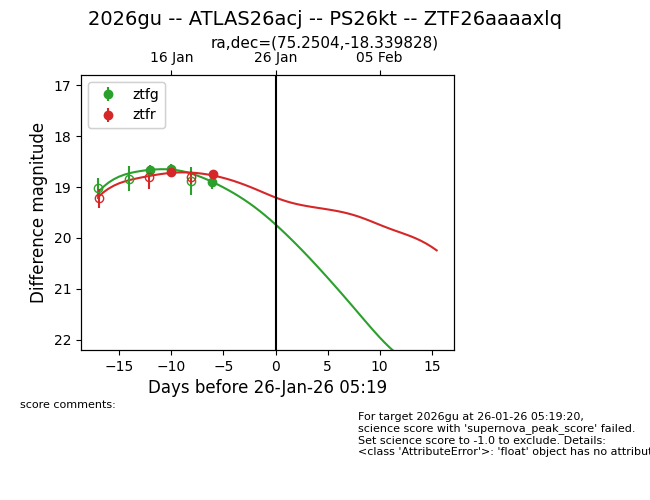
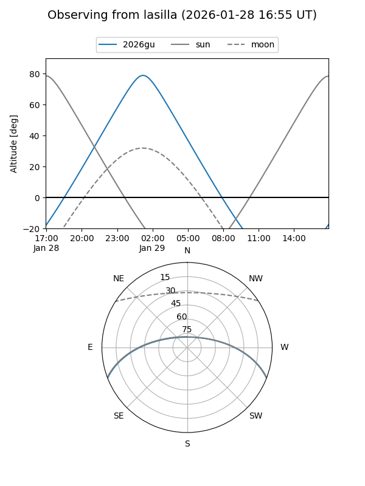
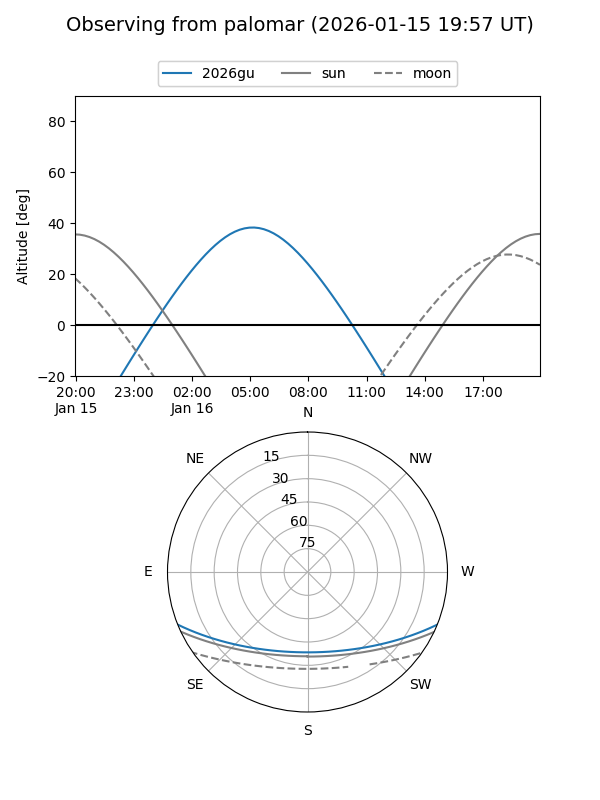
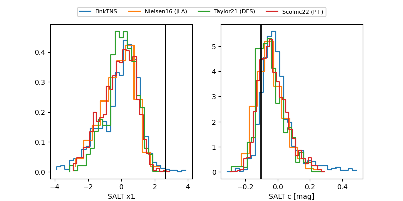

2026gu
Target 2026gu at 2026-01-27 23:31
Aliases and brokers:
FINK: link
Lasair: link
ALeRCE: link
TNS: link
YSE: link
alt names
ZTF26aaaaxlq (ztf,fink_ztf)
2026gu (tns,yse)
ATLAS26acj (atlas)
PS26kt (panstarrs)
Coordinates:
equatorial (ra, dec) = 75.2504,-18.33983
equatorial (HMS+DMS) = 05:01:00.11,-18:20:23.38
galactic (l, b) = (218.3280,-32.34249)
Flags:
Photometry:
last ztfg=18.91, ztfr=18.74
3 ztfg, 2 ztfr detections
Lightcurve

Visibility


Additional plots
